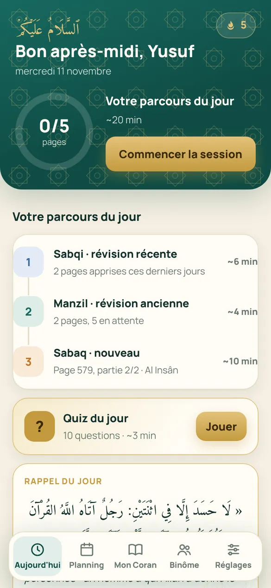
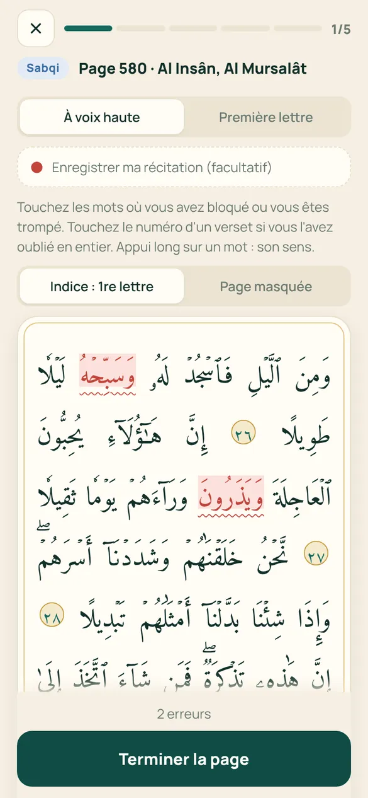
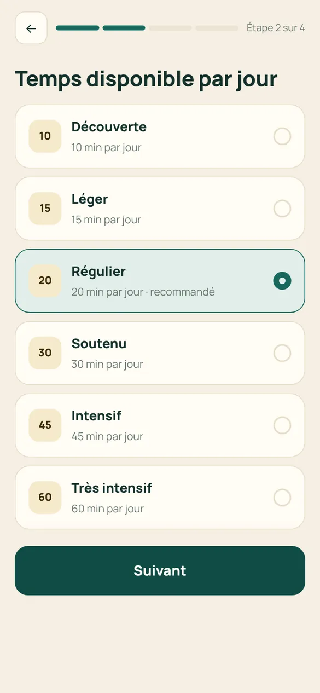
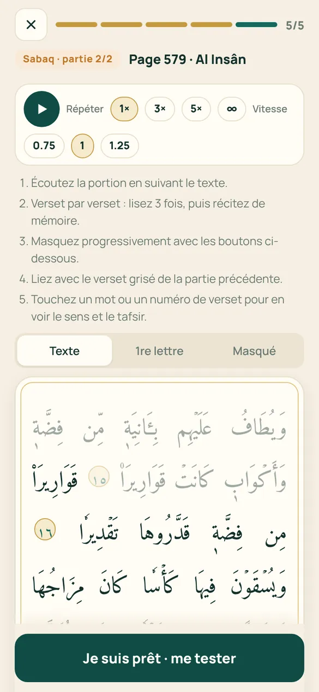
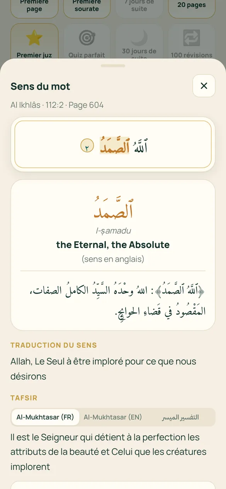
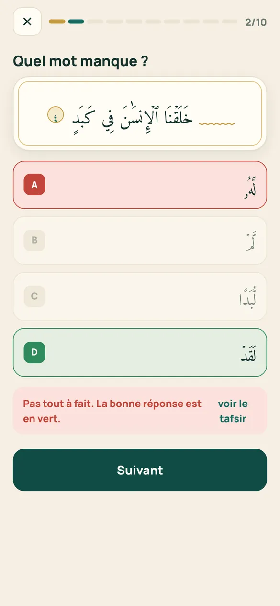
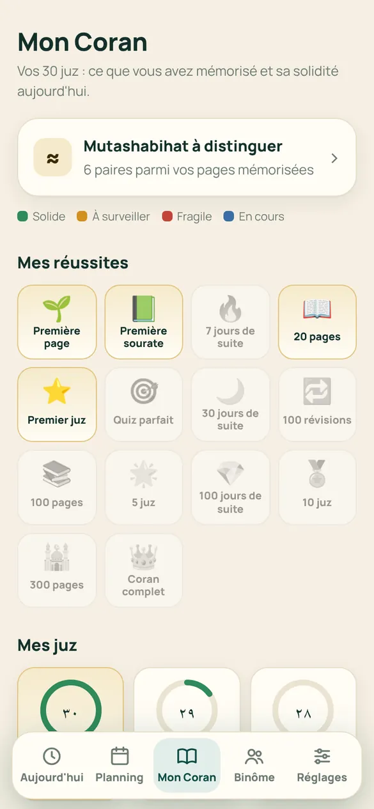
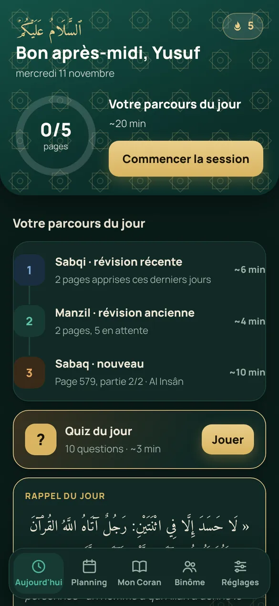
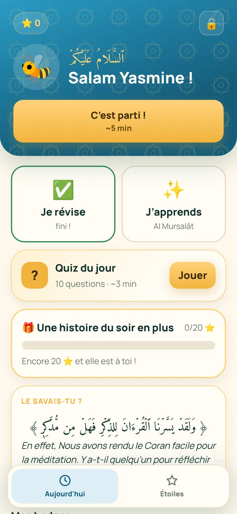

Sourah vous dit chaque jour quoi apprendre et quoi réviser, page par page du mushaf de Médine, pour que rien ne s'oublie.


« Le meilleur d'entre vous est celui qui apprend le Coran et l'enseigne. »
Rapporté par Al-Bukhari (5027)Plus on mémorise, plus il y a à réviser. Sourah organise tout pour vous, selon la méthode traditionnelle du hifz et la science de la mémoire.
Le nouveau (sabaq), la révision récente (sabqi) et l'ancienne (manzil), calculés pour tenir dans le temps que vous avez.
Chaque page revient juste avant que vous ne l'oubliiez. Les pages fragiles passent en premier.
Récitez de mémoire, révélez verset par verset, marquez vos erreurs : la suite du plan s'adapte.
Un moteur de révision qui estime la solidité de chacune des 604 pages.
8 récitateurs, répétition en boucle et vitesse réglable pour apprendre à l'oreille.
Touchez un mot ou un verset : traduction, explication et vocabulaire, en français, anglais ou arabe.
Les mutashabihat côte à côte, différences surlignées, pour ne plus confondre.
10 questions sur vos pages : verset suivant, mot manquant, sourate.
Envoyez votre récitation enregistrée, recevez une correction écrite ou vocale.
Une interface simple, des étoiles, des récompenses choisies par les parents.
Charge des 30 prochains jours, date estimée de fin de chaque juz.
Mode nuit, hors connexion, synchronisation entre vos appareils, données hébergées en Europe.






Un profil par enfant, un plan à sa mesure et un espace parent protégé par un code.

Sourah s'installe directement depuis le navigateur, sans passer par l'App Store ou le Play Store. Son icône apparaît sur votre écran d'accueil comme une application classique.
Scannez avec l'appareil photo de votre téléphone.
Non. Vous pouvez commencer sans compte : votre progression reste sur votre téléphone. Le compte sert à la sauvegarder, à la retrouver sur un autre appareil, à travailler avec un binôme et à suivre vos enfants.
Oui. Le mushaf, le plan et vos révisions fonctionnent hors connexion. L'audio et le tafsir d'une page se chargent la première fois, puis restent disponibles.
Non. Indiquez les juz que vous connaissez : leurs pages entrent directement en révision, réparties sur deux semaines.
Texte uthmani de The Noble Qur'an Encyclopedia, découpage du mushaf de Médine. Tafsir : Al-Mukhtasar (français, anglais) et At-Tafsir Al-Muyassar (arabe).
Sans compte, rien ne quitte votre téléphone. Avec un compte, votre progression est hébergée en Europe, avec votre consentement, et vous pouvez tout supprimer à tout moment depuis l'application.
Oui : le mode enfant simplifie l'interface, récompense l'effort avec des étoiles et laisse le parent évaluer la récitation et suivre la progression.
« Et Nous avons rendu le Coran facile à mémoriser. » (Al-Qamar, 17)
Installer sur mon téléphone